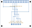

6routed diagnostic/power-reference nets
34header positions with no net or copper
65 x 56.5 mmreference carrier outline
ERC/DRC 0encoded violations
10open evidence holds
Native board view
Only the six selected pads have copper. No 5 V, ID EEPROM or unused-GPIO copper is present.

Exact pin disposition
| Pi physical pin | Function | Net | Kind | Disposition |
|---|---|---|---|---|
| 1 | unallocated - no copper | NO_NET | UNUSED | intentionally no net |
| 2 | 5 V - no copper | NO_NET | UNUSED | intentionally no net |
| 3 | unallocated - no copper | NO_NET | UNUSED | intentionally no net |
| 4 | 5 V - no copper | NO_NET | UNUSED | intentionally no net |
| 5 | unallocated - no copper | NO_NET | UNUSED | intentionally no net |
| 6 | unallocated - no copper | NO_NET | UNUSED | intentionally no net |
| 7 | unallocated - no copper | NO_NET | UNUSED | intentionally no net |
| 8 | unallocated - no copper | NO_NET | UNUSED | intentionally no net |
| 9 | unallocated - no copper | NO_NET | UNUSED | intentionally no net |
| 10 | unallocated - no copper | NO_NET | UNUSED | intentionally no net |
| 11 | unallocated - no copper | NO_NET | UNUSED | intentionally no net |
| 12 | unallocated - no copper | NO_NET | UNUSED | intentionally no net |
| 13 | unallocated - no copper | NO_NET | UNUSED | intentionally no net |
| 14 | unallocated - no copper | NO_NET | UNUSED | intentionally no net |
| 15 | GPIO22 / SR1 diagnostic | OBS_SR1_PI | INPUT | JOBS1.3 / JLOGIC1.3 |
| 16 | GPIO23 / SRA1 diagnostic | OBS_SRA1_PI | INPUT | JOBS1.4 / JLOGIC1.4 |
| 17 | 3V3 source candidate | PI_3V3_CANDIDATE | POWER | JOBS1.1 / JLOGIC1.1 |
| 18 | GPIO24 / K1 diagnostic | OBS_K1_PI | INPUT | JOBS1.5 / JLOGIC1.5 |
| 19 | unallocated - no copper | NO_NET | UNUSED | intentionally no net |
| 20 | compute return | COMPUTE_0V | RETURN | JOBS1.2 / JLOGIC1.2 |
| 21 | unallocated - no copper | NO_NET | UNUSED | intentionally no net |
| 22 | GPIO25 / K2 diagnostic | OBS_K2_PI | INPUT | JOBS1.6 / JLOGIC1.6 |
| 23 | unallocated - no copper | NO_NET | UNUSED | intentionally no net |
| 24 | unallocated - no copper | NO_NET | UNUSED | intentionally no net |
| 25 | unallocated - no copper | NO_NET | UNUSED | intentionally no net |
| 26 | unallocated - no copper | NO_NET | UNUSED | intentionally no net |
| 27 | ID - no copper | NO_NET | UNUSED | intentionally no net |
| 28 | ID - no copper | NO_NET | UNUSED | intentionally no net |
| 29 | unallocated - no copper | NO_NET | UNUSED | intentionally no net |
| 30 | unallocated - no copper | NO_NET | UNUSED | intentionally no net |
| 31 | unallocated - no copper | NO_NET | UNUSED | intentionally no net |
| 32 | unallocated - no copper | NO_NET | UNUSED | intentionally no net |
| 33 | unallocated - no copper | NO_NET | UNUSED | intentionally no net |
| 34 | unallocated - no copper | NO_NET | UNUSED | intentionally no net |
| 35 | unallocated - no copper | NO_NET | UNUSED | intentionally no net |
| 36 | unallocated - no copper | NO_NET | UNUSED | intentionally no net |
| 37 | unallocated - no copper | NO_NET | UNUSED | intentionally no net |
| 38 | unallocated - no copper | NO_NET | UNUSED | intentionally no net |
| 39 | unallocated - no copper | NO_NET | UNUSED | intentionally no net |
| 40 | unallocated - no copper | NO_NET | UNUSED | intentionally no net |
Held six-wire harness
Stock identities and colors are exact candidates. Every assembly cut length is still selection required.
| Conductor | Net | Color | Belden stock MPN | Cut length | Endpoints |
|---|---|---|---|---|---|
| 1 | PI_3V3_CANDIDATE | RED | Belden 3051 RD005 | SELECTION REQUIRED | JLOGIC1.1 to JOBS1.1 |
| 2 | COMPUTE_0V | BLACK | Belden 3051 BK005 | SELECTION REQUIRED | JLOGIC1.2 to JOBS1.2 |
| 3 | OBS_SR1_PI | BLUE | Belden 3051 BL005 | SELECTION REQUIRED | JLOGIC1.3 to JOBS1.3 |
| 4 | OBS_SRA1_PI | ORANGE | Belden 3051 OR005 | SELECTION REQUIRED | JLOGIC1.4 to JOBS1.4 |
| 5 | OBS_K1_PI | VIOLET | Belden 3051 VI005 | SELECTION REQUIRED | JLOGIC1.5 to JOBS1.5 |
| 6 | OBS_K2_PI | WHITE | Belden 3051 WH005 | SELECTION REQUIRED | JLOGIC1.6 to JOBS1.6 |
Ten holds remain open
| ID | Scope | Evidence required |
|---|---|---|
| PIOBS-HOLD-001 | received Pi/header geometry | Measure the received SC1112 board revision, header position, perpendicularity, seating and four-hole pattern; reference drawings alone are not production data |
| PIOBS-HOLD-002 | Samtec mate and land | Receive ESQ-120-33-G-D; inspect identity and fit; obtain fabricator DFM acceptance for the project-controlled 1.70 mm land with manufacturer 1.02 mm drill |
| PIOBS-HOLD-003 | stack and hardware | Select exact standoffs/screws, reconcile connector and spacer stack, define torque/locking and verify no board strain or component contact |
| PIOBS-HOLD-004 | case/cooler clearance | Verify received PI5-CASE-D, SC1148 Active Cooler, connector access, airflow, cutout need, retention and service clearance without modifying the case |
| PIOBS-HOLD-005 | harness cut and route | Freeze observation-carrier panel position, exact six cut lengths, separation, bend radius, bundle support, labels and service loop |
| PIOBS-HOLD-006 | termination process | Qualify direct-stripped 22 AWG preparation, 5 mm strip, 0.22-0.25 Nm torque, exposed-strand limit, pull test, retorque policy and inspection tooling |
| PIOBS-HOLD-007 | power sequencing/back-power | Review 3.3 V source current, Pi power states, startup pulls, cable faults and every back-power path; no 5 V or ID-pin copper exists on this candidate |
| PIOBS-HOLD-008 | target GPIO binding | Install and hash-verify the pinned target image; record kernel/libgpiod/gpiochip, line ownership, boot overlays and exact runtime readback |
| PIOBS-HOLD-009 | physical verification | Execute continuity, isolation, polarity, voltage, startup, shutdown, dropout, cable-fault, EMC and HIL tests with traceable equipment |
| PIOBS-HOLD-010 | qualified review and authority | Qualified electrical and functional-safety reviewers accept the diagnostic-only boundary; a separate signed work authorization is still mandatory |